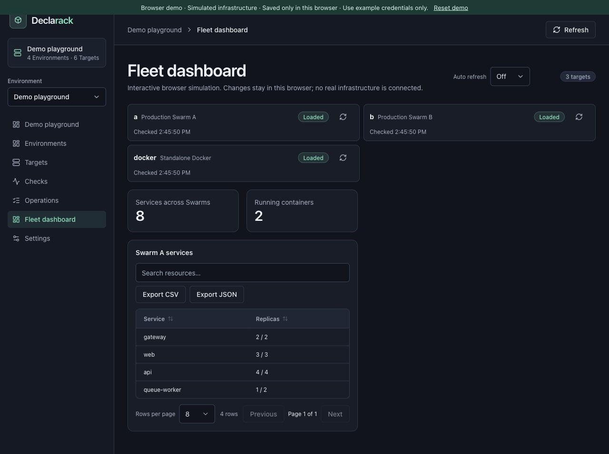

See the whole environment.
Group targets by project, team or location. Build a page that combines containers, Swarm services and API data from independent systems.
Bring Docker, Swarm, SSH hosts and HTTP APIs into one workspace. Shape the dashboards and workflows around how you operate.
Self-hosted · YAML-driven · Built for extending

WHY DECLARACK?
Your infrastructure rarely lives in one product. Declarack gives its different parts a shared interface, with configuration you can understand and change.
Group targets by project, team or location. Build a page that combines containers, Swarm services and API data from independent systems.
Define navigation, tables, details, charts, forms and actions in YAML. Use JSONata to turn upstream responses into useful views.
Give repeatable operations a home in the GUI. Reuse typed inputs, confirmations and reviewed plans instead of building another frontend.
USEFUL FROM THE FIRST CONNECTION
Start with bundled management features, then add the views and operations your environment needs.
Manage container lifecycles and Compose projects. Inspect health, read logs, open terminals and manage images, networks and volumes.
Work with services, nodes, tasks, stacks, configs and secrets. Deploy stacks from inline YAML, folders or Git sources.
Run commands across SSH targets in an environment, collect host metrics and connect custom API operations. Use SSH tunnels for remote connections.
Combine cards, charts and tables from multiple systems. Configure page placement, data mappings, filters and optional refresh.
Search, sort and page through resources. Open full JSON, dedicated details, confirmations, bulk reviews and supported operation plans.
Edit YAML fragments in the GUI, copy examples, review changes and activate saved revisions. Manage named credential profiles in one place.
Schedule configured checks and retain results, failure thresholds and recovery transitions. Outbound alert delivery is not included yet.
Use administrator accounts, revocable sessions and built-in TLS with supplied or self-signed certificates. All accounts have administrator access.
Run the Python and React application in a container. Store state in SQLite or PostgreSQL and add trusted adapters from a mounted folder.
YOUR NEXT INTEGRATION STARTS HERE
Point an operation at an API. Map its response into a reusable table. Add actions, forms and environment summaries as you need them.
The same renderer powers bundled management features and your own integrations.
Build your first API interface →Configuration excerpt · assumes an HTTP target using this feature
operations:
apps.list:
bindings:
http:
executor: http.request
path: /apps
features:
applications:
title: Applications
operation: apps.list
rows: items
columns:
- label: Name
value: name
- label: Status
value: statusFIND YOUR FIT
Declarack is a fit when you want to configure an administration interface across systems. Other tools may be a better fit for specialized deployment or enterprise governance.
| Product | Main focus | Docker & Swarm | Choose it when… |
|---|---|---|---|
| Declarack CONFIGURE YOUR INTERFACE | YAML-defined administration across Docker, SSH and HTTP. | Standalone / Compose and Swarm workflows; coverage varies by operation. | You want custom pages and reusable workflows across different target types. |
| Portainer ↗ | Container management across multiple environments. | Docker Standalone and Swarm management, plus other orchestrators. | You need broad container tooling and Business Edition governance such as granular RBAC. |
| Swarmpit ↗ | A dedicated Docker Swarm management interface. | Swarm-focused resource management and monitoring. | You want an interface centered on operating Docker Swarm. |
| Komodo ↗ | Server, deployment and build automation. | Compose stacks and Swarm nodes, services, stacks, configs and secrets. | You want deployment automation, Git-based sources and build workflows. |
| Dockge ↗ | A Compose-file-centered stack manager. | Compose management across Docker hosts through agents. | You mainly want to edit and operate Compose stacks with files on disk. |
Reviewed November 23, 2026. This is a positioning comparison, not a full parity claim. Editions and capabilities change. Sources: Portainer environments, Portainer BE roles, Swarmpit, Komodo Swarm, Komodo Compose, Dockge features.
MAKE IT YOUR WORKSPACE
Explore the interface, follow a hands-on tutorial, or run the real two-Swarm lab with Docker-in-Docker.